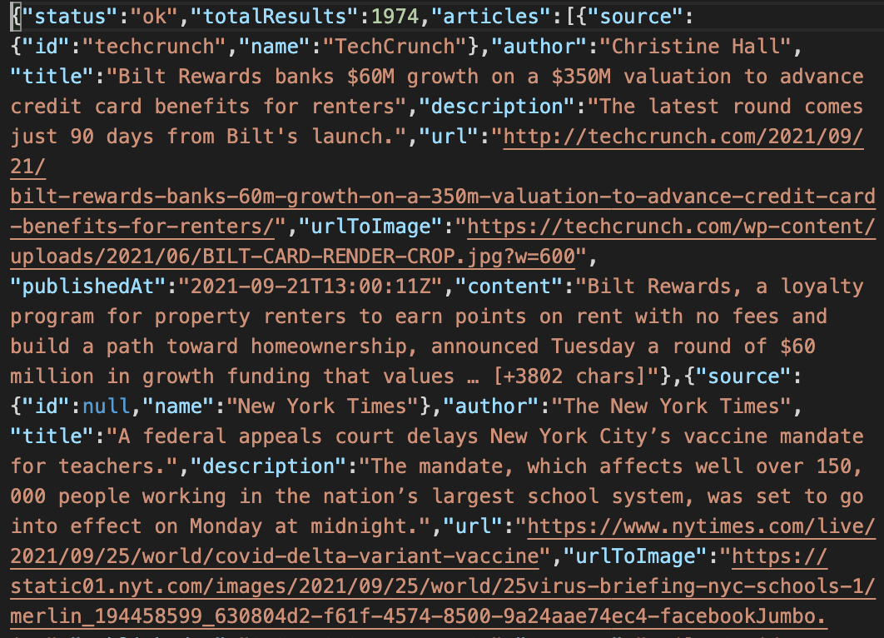
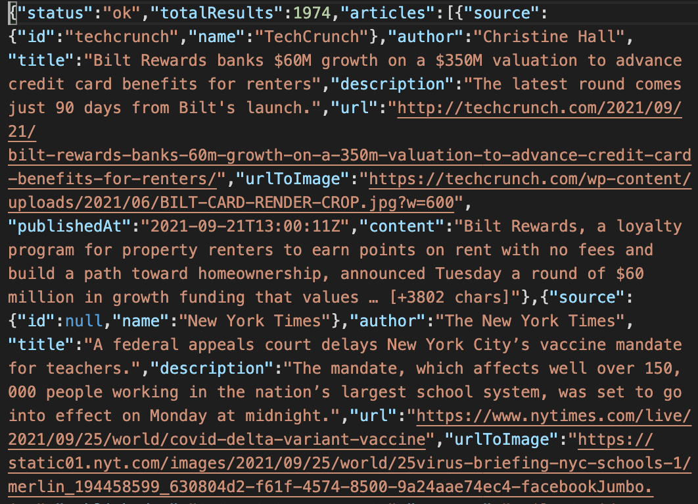

Menu
Data overview k-means clustering Hierarchical clustering Optimal k Prediction Summary Data download and analysis codeData Overview
Demography datasets, labeled by regions, include two datasets of Housing Vacancies and Homeownership (HV) and New Homes Sales (NHS). Five variables from HV dataset and three variables from NHS dataset are combined into one numeric data set with labels of regions in Data Cleaning session.
In Exploring data analysis, the regional differences among variables are demonstrated. In order to explore whether variables including Homeownership Rate (HOR), Occupied Housing Units (OCC), Owner Occupied Housing Units (OWNOCC), Renter Occupied Housing Units (RNTOCC), Vacant Housing Units Held Off the Market (OFFMAR) from HV dataset, and New Single-family Houses Sold (SOLD), Annual Rate for Monthly New Single-family Houses Sold (ASOLD), Monthly New Single-family Houses For Sale (FORSALE) from NHS dataset have overall clearly regional differences, k-means clustering and hierarchical clustering are performed to verify the differences among regions.
Merged HV-NHS data, which is obtained in Data Cleaning Session containing 104 records and 8 variables as mentioned above, is analyzed in R (R Code) to perform the clustering analysis. The Figure 1 shows two 3D plots using two sets of three variables. One set is OCC, ASOLD, and HOR. The other is SOLD, OWNOCC, and OFFMAR. The figure shows how regions could affect the distribution of the scaled data. Some of the variables such as the first sets are more distincted by regions compared to others, such as the second set.
b
Figure 1. 3-D plots in different regions. a, with OCC, ASOLD, and HOR; b, with OFFMAR OWNOCC and SOLD.
Note:
Figure 2 shows the Euclidean distance heatmap of the data. It shows the distances among records in the same regions are indeed close to each other. In other words, the data have the potential to labeled by regions, which is also shown in Exploring data analysis. Moreover, the NE, MW, and WE regions are more close to each other compared to to SO.
Figure 2. Euclidean distance heatmap.
Figure 3 shows the heatmap (using Euclidean distance in hierarchical clustering) of the scaled data. From Figure 2, the Euclidean distance of some of the variables, such as HOR are clearly divided by different regions. However, variables such as OFFMAR and RNTOCC, are relatively consistant throughout regions.
Figure 3. Heatmap using Euclidean distance in hierarchical clustering.
In this session, data are clustered using different clustering methods, such as k-means clustering and hierarchical clustering, are demonstrated. Optimal k value is also discussed. Finally, a small dataset contains three(3) records are classified to test the k-means classification.
K-means clustering
K-means clustering is a wide used partitioning method to classify data based on pairwised within-cluster distance. The goal of k-means clustering is to minimizing within-cluster variances (Wiki). All code can be found here.
- How group numbers affect K-means results?
- How Manhattan distance affect K-means results?
Three group numbers of k=2, k=3, and k=4 are tested in k-means clustering with Euclidean distance. Figure 4 shows the comparson of k-means clustering with different group numbers. The labels are the correct classification of each data point. First, data points from same regions are clustered together. When there is only two groups, SO records are isolated from other regions. When there are three groups, WE and NE data are grouped together. This is consistant with heatmap shown in Figure 2. Using group number of four perfectly devides data into four groups.
Figure 4. Different group numbers in k-means clustering using Euclidean distance. a, k=2; b, k=3; c, k=4.
At the same manner, three group numbers of k=2, k=3, and k=4 are tested in k-means clustering with Manhattan distance. Figure 5 shows the comparson of k-means clustering with different group numbers. The labels are the correct classification of each data point. When there are two and three groups, the differences between results of k-means using Euclidean distance and Manhattan distance are negligible. However, when there are four groups, the result is different between the k-means using two distances. k-menas using Manhattan distance group NE and MW together, while WE is devided into two sections. Compared with Manhattan distance, Euclidean distance is more compatible with k-means clustering.

Figure 5. Different group numbers in k-means clustering using Manhattan distance. a, k=2; b, k=3; c, k=4.
Hierarchical clustering
Hierarchical clustering is another wide used method to classify data based on pairwised within-cluster distance. Different from k-means clustering, hierarchical clustering do not need the hyperparameter of the number of groups. However, based on the results of clustering, the number of clustering can be decided for further analysis. Moreover, due to it requires measurement of dissimilarity between sets of observations, different distances representing this dissimilarity could affect the results of the Hierarchical clustering. (Wiki). All code can be found here.
- Group numbers based on Hierarchical clustering results
- How Manhattan distance affect hierarchical clustering results?
- How Canberra distance affect hierarchical clustering results?
Three group numbers of k=2, k=3, k=4, and k=5 are applied to the results of in hierarchical clustering with Euclidean distance.
Figure 6 shows the comparson of clustering with different group numbers. The labels are the correct classification of each
data point. First, data points from same regions are clustered together. From the dendrogram, most of the records are more alike with
the ones in same regions. Some of the records, such as records in SO, are considered dissimilar with other records in SO region.
This dissimilarity is larger than the dissimilarity between NE and WE.
When there is only two groups, SO records are isolated from other regions.
When there are three groups, WE and NE data are grouped together. So far, the clustering results are as same as using
k-means clustering. On the other hand, using group number of four devides data into four groups: NE and WE, MW, and SO1 and SO2.
Further clustering with group number of five can seperate NE and WE.

Figure 6. Dendrogrames of different group numbers in hierarchical clustering using Euclidean distance. a, k=2; b, k=3; c, k=4; d, k=5.
At the same manner, four group numbers of k=2, k=3, k=4 and k=5 are applied to the results of in hierarchical clustering with Manhattan distance. Figure 7 shows the comparson of the clusters with different group numbers. The labels are the correct classification of each data point. When there are two groups, as same as previous methods, SO is isolated from others. However, starting from group number of three, there are small portion of SO is considered more dissimilar to other SO than the similarity between other groups and SO. Further clustering with group number of five can seperate NE and WE.
Figure 7. Hierarchical clustering using Manhattan distance. a, k=2; b, k=3; c, k=4; d, k=5.
Canberra distance (Wiki) considers the dissimilarity as sum of the ratio of differences between vectors and their absolute summation. It standarizes the dissimilarity between vectors, so that dissimilarity between two close-magnitude variables can be detected. Four group numbers of k=2, k=3, k=4 and k=5 are applied to the results of in hierarchical clustering with Canberra distance. Figure 8 shows the comparson of the clusters with different group numbers. Again, the labels are the correct classification of each data point. The dendrogram is appearently diffrent from hierarchical clustering using other distances. WE records have fluctuated heights, which is not shown in other dendrograms. One possibility is that WE data have more in-group variation. When there are two groups, as same as previous methods, SO is isolated from others. However, starting from group number of four, WE is devided into two and three in group number of four and five, respectively.
Figure 8. Hierarchical clustering using Canberra distance. a, k=2; b, k=3; c, k=4; d, k=5.
Optimal Number of Groups
Whether in k-means clustering or hierarchical clustering, number of groups are needed as hyperparameter or for decision making. There are many methods can be applied to obtain the optimal number of groups. There, three methods are tested for k-means clustering and hierarchical clustering using Euclidean distance. All code can be found here.
- Hyperparameter of number of groups in k-means
- Determine number of groups in hierarchical clustering
Three methods of Elbow, Silhouette, and Gap-statistic are applied to determine the optimal number of groups in k-means clustering using Euclidean distance. Figure 9 shows the results using different methods. Only the Silhouette method give four groups, which is the data labeled as. This is a result from large dissimilarity between SO and other groups.
Figure 9. Optimal number of k for k-means clustering. a, Elbow method; b, Silhouette method; c, Gap-statistic method
At the same manner, three methods of Elbow, Silhouette, and Gap-statistic are applied to determine the optimal number of groups in k-means clustering using Euclidean distance. Figure 10 shows the results using different methods. As same as in k-means clustering, only the Silhouette method give four groups, which is the data labeled as. This is a result from large dissimilarity between SO and other groups. There are some differences between Elbow and Gap-statistic results. For Elbow methods, the curve is more smooth, which is due to compared to the randomness of starting points in k-means clustering, hierarchical clustering is more robust. Gap-statistic give optimal k as five. As shown in Figure 6d, this considers isolating small portion of SO make the clustering optimal.
Figure 10. Optimal number of k for hierarchical clustering. a, Elbow method; b, Silhouette method; c, Gap-statistic method
Classification using result from hierarchical clustering
Three records from 2014 data are extracted for testing using hierarchical clustering for classification using number of groups of four. The data were generated in "Data processing for clustring" in Data Cleaning session. Figure 11 shows where are the three records should be. Figure 12 shows the dataset.
Figure 11. 3D plot of predicted data
Figure 12. Predict dataset
Figure 13 indicates the code used. Using knn() method, the three records are successfully predicted (Figure 14). Figure 15 shows the hierarchical clustering results with k = 4.
Figure 13. Code for prediction
Figure 14. Predict results
Figure 15. Hierarchical clustering results
Summary
For k-means clustering, Euclidean distance is more compatible with this method. This is resulted from the nature of k-means clustering is to minimizing within-cluster variance that are the values from Euclidean distance. For Hierarchical clustering, all distances can be used to cluster the data. However, a good knowledge of the nature of the data is required. For example, when small portion of SO are seperated from SO groups, whether they are outliers or real group need to be determined by users. Both methods can be used to clustring this dataset while k-means cluster gave more accurate results compared to hierarchical clustering. Silhouette method gave the optimal number of groups matched the labels. Hierarchical clustering with number of groups of four and Euclidean distance gave good prediction of extra records.
 
